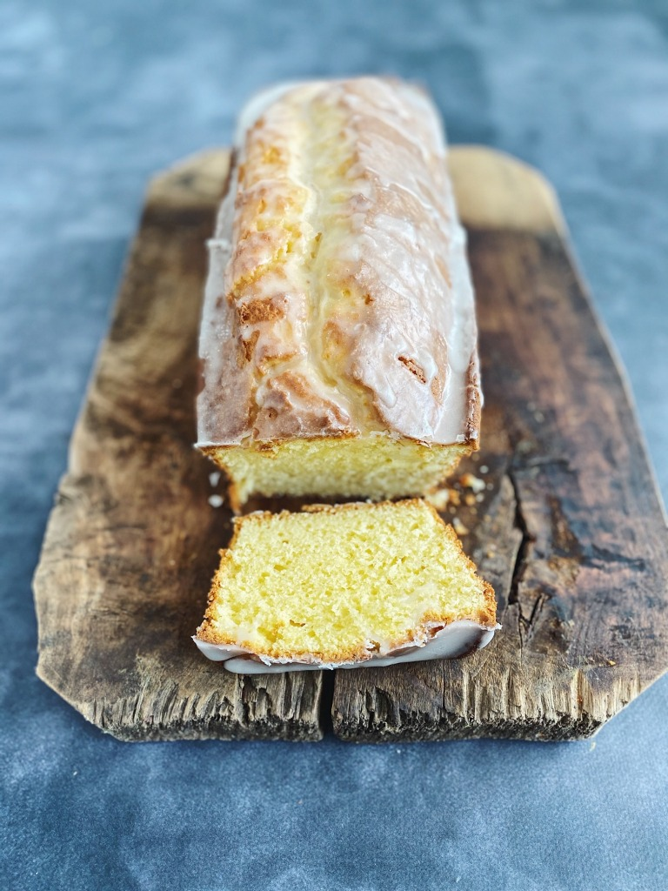

Este cake de limón con glaseado blanco es delicioso, es de los bizcochos más ricos que probé. Un sabor a limón intenso, ácido y dulce a la vez, una textura jugosa buenísima.
La masa se hace en Thermomix super fácil y lleva combinación de harina de trigo y de maicena, y me ha encantado el toque que le da, ralladura de limón, azúcar, leche, zumo de limón... muy rico.
El bizcocho solo ya esta buenísimo pero si quieres darle un toque más especial, prueba a ponerle el glaseado blanco que haremos con azúcar y zumo de limón y echándolo encima cuando el bizcocho está templado, queda como una costra crujiente deliciosa que combina genial con el bizcocho y le aporta un punto más de sabor a limón.
Tiempo de preparacion:15 minutos
Tiempo total:1hora 15 minutos
Raciones:8
Ingredientes
Cake de limón
- 200 gr de Harina de repostería
- 100 gr de Maicena
- 1 Sobre de levadura química en polvo
- 200 gr de Azúcar
- 4-6 Tiras de piel de limón (sin nada de parte blanca) bien seca
- 3 huevos
- 160 gr de Mantequilla en trozos pequeños
- 120 gr de Leche
- 40 gr de Zumo de limón
Glaseado de limón
- 200 gr de Azúcar
- 40 gr de Zumo de limón
Instrucciones
- Precaliente el horno a 180°C. Forre con papel de hornear un molde de cake de 1 litro de capacidad.
- Ponga en el vaso la harina, la maicena y la levadura y mezcle 10 seg/vel 5. Vierta en un bol y reserve.
- Ponga en el vaso el azúcar y la piel de limón y pulverice 30 seg/vel 10. Con la espátula, baje los ingredientes hacia el fondo del vaso.
- Incorpore los huevos y mezcle 3 min/37°C/vel 3.
- Añada la mantequilla y bata 3 min/vel 3.
- Agregue la leche y el zumo de limón y mezcle 10 seg/vel 2. Después, retire el cubilete y programe 2 min/vel 2. Mientras tanto, vaya añadiendo la mezcla de harina, maicena y levadura por la abertura. Termine de mezclar con la espátula y vierta la mezcla en el molde preparado.
- Hornee durante 40-50 minutos (180°C). Retire del horno y deje templar 10-15 minutos. Lave y seque perfectamente el vaso y la tapa.
- Ponga el azúcar y pulverice 30 seg/vel 10.
- Añada el zumo de limón y mezcle 10 seg/vel 3. Con la espátula, baje los ingredientes hacia el fondo del vaso y mezcle 10 seg/vel 5.
- Desmolde el bizcocho sobre una rejilla y, estando templado, vierta encima el glaseado. Sirva templado o frío.